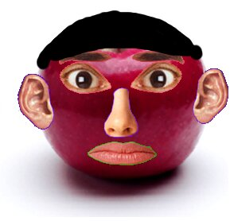
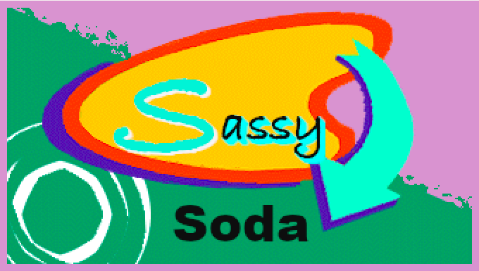
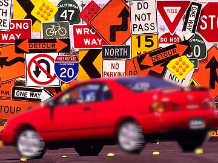
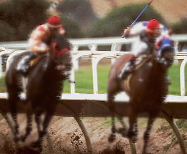
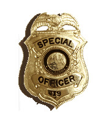
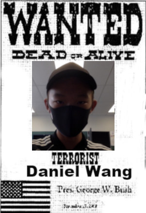

For this task, I added ears, noses, mouth, eyes and eyebrows to a plain apple.
This tasks includes using smudging and painting tools on GIMP.

For this task, I experienced with changing fonts and colours with advertisting logos.
Using the features in GIMP, I added blurs to the image. This makes the image feel like it's moving.
 For this task, I added a shadow to an image, making the image look more realistic with the direction of light creating this effect.
This task required me to crop a man out of it's background and combining it into another image.

This task introduced the "heal" tool on GIMP. It helps get rid of scars and blemishes on a person's face.


And lastly, I designed a Wanted Poster with my name on it.
